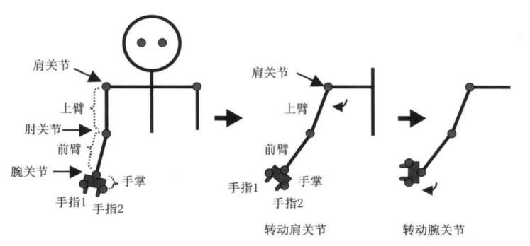
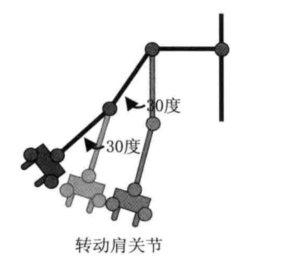
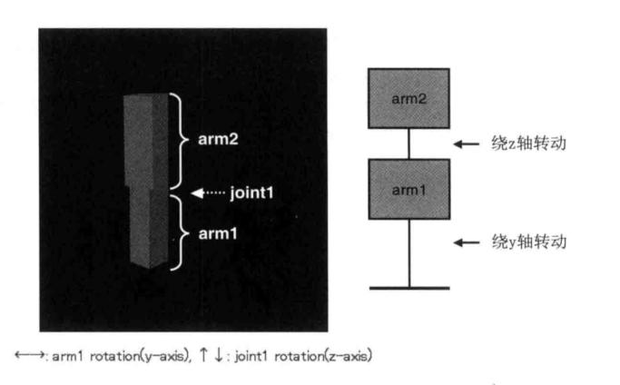
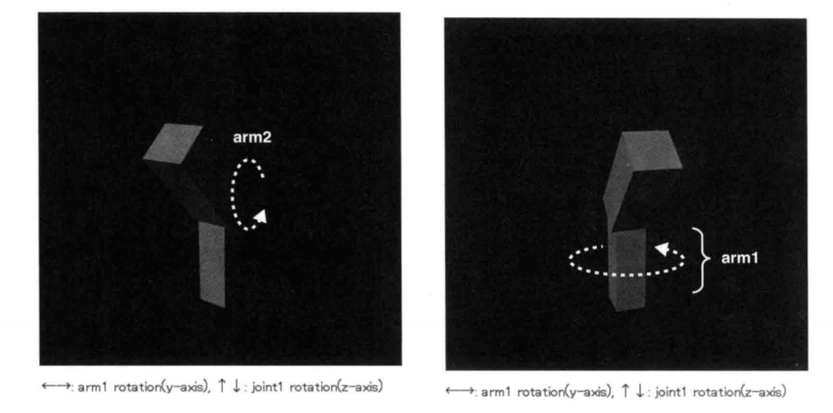
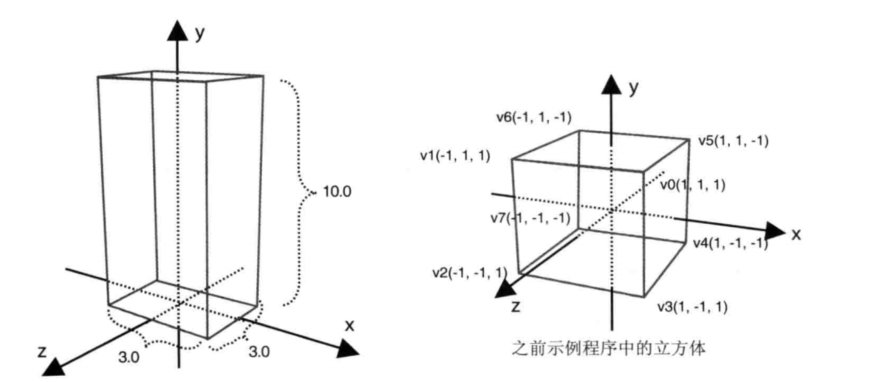
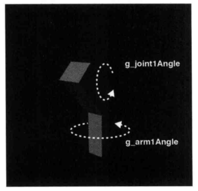

对应《WebGL编程指南》第九章 43-jointModel
要点：多个简单模型组成的复杂模型、层次结构模型、单关节模型
知识点
一、多个简单模型组成的复杂模型
1.1 引入
我们已经知道如何平移、旋转简单的模型，比如二维的三角形或三维的立方体。但是，实际用到的很多三维模型，如3D游戏中的人物角色模型等，都是由多个小的立方体模型组成的。
绘制由多个小部件组成的复杂模型，最关键的问题是如何处理模型的整体移动，以及各个小部件间的相对移动。这一节就来研究这个问题。首先，考虑一下人类的手臂：从肩部到之间，包括上臂、前臂、手掌和手指，如下图所示：

手臂的每个部分可以围绕关节运动，如上图所示：
- 上臂可以绕肩关节旋转运动，并带动前臂、手掌和手指一起运动。
- 前臂可以绕肘关节运动，并带动手掌和手指一起运动，但不影响上臂。
- 手掌绕腕关节运动，并带到手指一起运动，但不影响上臂和前臂
- 手指运动不影响手臂、前臂和手掌
总之，当手臂的某个部位运动时，位于该部位以下的其他部位会随之一起运动，且位于该部位以上的其他部位不受影响。此外，这里的所有运动，都是围绕某个关节的转动。
1.2 层次结构模型
绘制机器人手臂这样一个复杂的模型，最常用的方法就是按照模型中各个部件的层次关系，从高到低逐一绘制，并在每个关节上应用模型矩阵。
注意，三维模型和现实中的人类或机器人不一样，它的部件并没有真正连接在一起。如果直接转动上臂，那么肘部以下的部分，包括前臂、手掌和手指，只会留在原地，这样手臂就断开了。所以，当上臂绕肩关节转动时，你需要在实现”肘部以下部分跟随上臂转动的逻辑“。具体地，上臂绕肩关节转动了多少度，肘部以下部分也应该绕肩关节转动多少度。
当情况较为简单时，实现”部件A转动带动部件B转动“可以很直接，只要对部件B也施以部件A的旋转矩阵即可。比如，使用模型矩阵使上臂绕肩关节转动30度，然后在绘制肘关节以下的各部位时，为它们施加同一个模型矩阵，也令其绕肩关节转动30度，如下图所示。这样，肘关节以下的部分就能自动跟随上臂转动了。

如果情况更复杂一些，比如先使上臂绕肩关节转动30度，然后使前臂绕肘关节转动10度，那么对肘关节以下的部分，你就得先施加上臂绕肩关节转动30度的矩阵，然后再施加前臂绕肘关节转动10度的矩阵。将这两个矩阵相乘，其结果可称为”肘关节模型矩阵“，那么在绘制肘关节以下部分的时候，直接应用这个所谓的”肘关节模型矩阵“作为模型矩阵就可以了。
按照上述方式编程，三维场景中的肩关节就能影响肘关节，使得上臂的运动带动前臂的运动；反过来，不管前臂如何运动都不会影响上臂。这就与现实中的情况相符合了。
二、单关节模型
2.1 层次模型分析
先来看一个单关节模型的例子。示例程序 JoinModel 绘制了一个仅由两个立方体部件组成的机器人手臂，其运行结果如下图左所示；手臂的两个部件为 arm1 与 arm2，arm1 接在 arm2 的上面，如图右所示。你可以把 arm1 想象成上臂，而把 arm2 想象成前臂，而肩关节在最下面。

运行程序，用户可以使用左右方向键控制 arm1 水平转动，使用上下方方向键控制 arm2 绕 joint1 关节垂直转动。比如，先按下方向键，arm2 逐渐向前倾斜，然后按右方向键，arm1 向右旋转。

arm2 绕 joint1 的转动并不影响 arm1，而 arm1 的转动会带动 arm2 一起转动。
2.2 程序分析
和以前的程序相比，main()函数基本没有变化，主要的变化发生在 initVertexBuffers()函数中，它将 arm1 和 arm2 的数据写入了相应的缓冲区。以前程序中的立方体都是以原点为中心，且边长为2.0；本例为了更好地模拟机器人手臂，使用如下图所示的立方体，原点位于底面中心，底面是边长为3.0的正方向，高度为10.0。将原点置于立方体的底面中心，是为了便于时立方体绕关节转动。arm1 和 arm2 都是用这个立方体。

main()函数首先根据可视空间、视点和视线方向计算出了视图投影矩阵 viewProjMatrix。
1 | // 计算视图投影矩阵 |
然后在键盘事件响应函数中调用 keydown(）函数，通过方向键控制机器人的手臂运动。
1 | // 注册键盘事件响应函数 |
接着定义 keydown()函数本身，以及若干该函数需要用到的全局变量。
1 | var ANGLE_STEP = 3.0; // 每次按键转动的角度 |
ANGLE_STEP 常量表示每一次按下按键，arm1 或 joint1 转动的角度，它的值是3.0。g_arm1Angle 变量表示 arm1 的当前角度，g_joint1Angle 变量表示 joint1 的当前角度，如图所示：

keydown()函数的任务是，根据按下的是哪个按键，对 g_joint1Angle 或 g_arm1Angle 变量加上或减去常量 ANGLE_STEP 的值。注意，joint1 的转动角度只能在 -135度到 135度之间，这是为了不与 arm1 冲突。最后，draw()函数将整个机器人手臂绘制出来。
2.3 绘制层次模型（draw()）
draw()函数的任务是绘制机器人手臂。注意，draw()函数和 drawBox()函数用到了全局变量 g_modelMatrix 和 g_mvpMatrix。
1 | // 坐标变换矩阵 |
draw()函数内部调用了 drawBox()函数，每调用一次绘制一个部件，先绘制下方较细 arm1，再绘制上方较粗 arm2。
绘制单个部件的步骤是：
- 调用
setTranslate()或translate()进行平移； - 调用
rotate()进行旋转； - 调用
drawBox()进行绘制。
绘制整个模型时，需要按照各部件的层次顺序，先 arm1 后 arm2，再执行第一步平移，第二步旋转，第三步绘制。
绘制 arm1 的步骤如下：
- 首先在模型矩阵
g_modelMatrix上调用setTranslate()函数，使之平移（0.0, -12.0, 0.0）到稍下方位置； - 然后调用 rotate(）函数，绕 y 轴旋转 g_arm1Angle 角度；最后调用 drawBox(）函数绘制 arm1。
接着来绘制 arm2：
- 与 arm1 在 joint1 处链接，该处上开始绘制 arm2。
- 但是此时，模型矩阵还是处于绘制 arm1 的状态，所以得先调用
translate()函数沿 y 轴向上平移 arm1 的高度 arm1Length。注意这里调用的是translate()而不是setTranslate()，因为这次平移是在之前的基础上进行的。 - 然后，使用
g_joint1Angle进行肘关节处的转动，并在 x 和 z 轴稍作拉伸，使前臂看上去粗一些，以便于上臂区分开。
1 | // Arm2 |
这样一来，每当 keydown()函数更新了 g_joint1Angle 变量和 g_arm1Angle 变量的值，然后调用 draw()函数进行绘制时，就能绘制处最新状态的机器人手臂，arm1 的位置取决于 g_arm1Angle 变量，而 arm2 的位置取决于 g_joint1Angle 变量。drawBox()函数的任务是绘制机器人手臂的某个立方体部件，如上臂或前臂。它首先计算模型视图投影矩阵，传递给 u_MvpMatrix 变量。然后根据模型矩阵计算法向量变换矩阵，传递给 u_NormalMatrix 变量，最后绘制立方体。
1 | // 绘制立方体 |
绘制层次模型的基本流程就是这样了。虽然本例只有两个立方体和一个链接关节，但是绘制更加复杂的模型，其原理与本节是一致的，要做的只是重复上述步骤而已。
实例
代码
1 | // Vertex shader program |
1 |
|
效果
使用左右方向键控制 arm1（下半部分）水平转动，使用上下方方向键控制 arm2（上半部分） 绕 joint1 关节垂直转动
<!DOCTYPE html>
Tips: Please indicate the source and original author when reprinting or quoting this article.